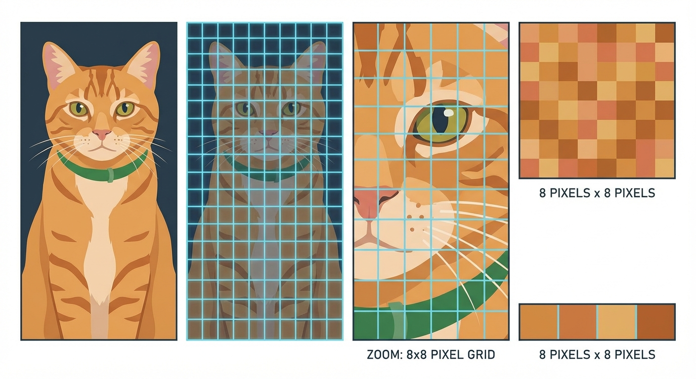

The Art of Compression (JPEG Part I)
The Magic Shrinking Machine
You take a stunning photo of a sunset. On your camera, the raw file is a massive 20 MB. You decide to send it to a friend on WhatsApp. It arrives instantly, and the file size is now only 200 KB.
That is a 99% reduction in size. If you threw away 99% of a book, you'd be left with a few random sentences. Yet, the photo still looks like a sunset. How did the phone throw away so much data without turning the photo into garbage?
The answer lies in the art of Compression, and specifically, the clever tricks used by the JPEG algorithm. Today, we start looking at the pipeline that makes this possible.
Lossless vs. Lossy
Before we dive into JPEG, we need to understand that not all compression is created equal. Broadly, there are two strategies: Lossless and Lossy.
Imagine you want to pack a bulky wool sweater into a small suitcase.
Lossless Compression is like neatly folding the sweater and using a vacuum bag to suck all the air out. It takes up less space, but when you unpack it (decompress), it returns to its exact original shape. This is how ZIP files or PNG images work. You get back exactly what you put in.
Lossy Compression is ... well, it's like cutting the sleeves off the sweater because you don't think anyone will notice. You save a lot of space, but you can never get the sleeves back. The original data is changed forever.
JPEG is a Lossy format. It relies on the fact that human eyes are easily tricked.
Test Your Knowledge
Which of the following scenarios requires Lossless compression?
Step 1: Hacking Human Vision
The first step in the JPEG pipeline isn't math—it's biology. Your eyes are not perfect sensors. You are very good at detecting changes in brightness (light and dark), but you are surprisingly bad at detecting fine details in color.
Computers typically store images in RGB (Red, Green, Blue) format. But JPEG doesn't want RGB. It converts the image into a different color space called YCbCr.
In this system, we split the image into three channels:
- Y (Luminance): This is the brightness. It's essentially a black-and-white version of the photo.
- Cb (Blue-Difference): How 'blue' the pixels are relative to green.
- Cr (Red-Difference): How 'red' the pixels are relative to green.
Build Your Vocab
Luminance vs. Chrominance
Luminance (Y) represents the intensity or brightness of light in an image. Chrominance (Cb and Cr) represents the color information. In image compression, Luminance is preserved with high detail, while Chrominance is often compressed heavily.
Why do we do this? Because now we can cheat. Since your eyes rely on the Luminance (Y) for detail, we keep that channel at full resolution.
But for the Chrominance (Cb and Cr) channels, we can throw away 50% or even 75% of the pixels, and you probably won't even notice. This is called Chroma Subsampling.
Test Your Knowledge
Why does converting RGB to YCbCr help with compression?
Why It Matters
This conversion explains why low-quality JPEGs sometimes look like the color is 'bleeding' outside the lines. The color information is actually lower resolution than the brightness information!

JPEG ruthlessly exploits this biological weakness to save space. By downsizing the color channels, we can immediately shave off a significant chunk of the file size before we even start doing complex math.
Stop and Think
We discussed how lossy compression discards "unimportant" data. Imagine you are a doctor analyzing a digital X-ray to find a hairline bone fracture. What are the risks of using high-compression JPEG for this image?
Step 2: Divide and Conquer
Once we have our Y, Cb, and Cr channels, the computer doesn't try to process the whole 12-megapixel image at once. That would be computationally exhausting.
Instead, it chops the image up. This is Step 2: Block Splitting.
The standard JPEG algorithm divides the image into 8x8 pixel blocks. Every subsequent step of the compression—math, quantization, and encoding—happens inside these tiny 8x8 universes independently.
This is why, if you zoom way in on a low-quality image, you see a checkerboard pattern. You are seeing the edges of these individual 8x8 blocks.
Frequently Asked
Why 8x8? Why not 16x16 or 4x4?
It's a balance or "Goldilocks" zone. A 4x4 block is too small to capture complex patterns (frequencies), so compression wouldn't be efficient. A 16x16 block is mathematically more complex to process and creates worse "ringing" artifacts (ghostly ripples) near edges. Over the years, engineers found 8x8 to be the best trade-off between speed and quality.
Review and Reflect
We have started our journey into the JPEG pipeline. We haven't done any heavy math yet, but we've already prepared the image for massive size reduction.
Let's review what happens before the math kicks in:
- Color Transformation: We switch from RGB to YCbCr to separate brightness from color.
- Chroma Subsampling: We shrink the Cb and Cr channels because eyes are bad at seeing fine color detail.
- Block Splitting: We cut the image into 8x8 blocks to process them one by one.
In the next lesson, we will look inside one of these 8x8 blocks and apply the Discrete Cosine Transform (DCT) to turn pixels into frequencies.